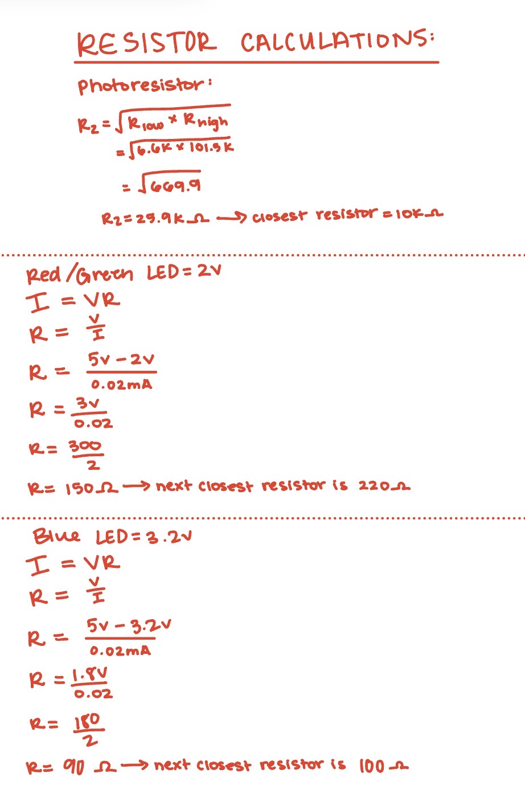
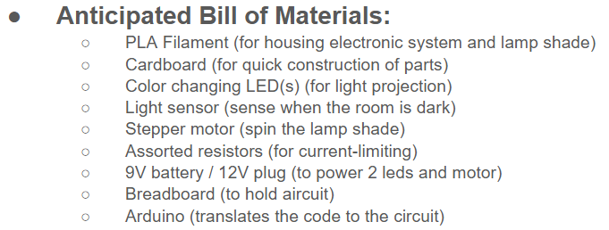
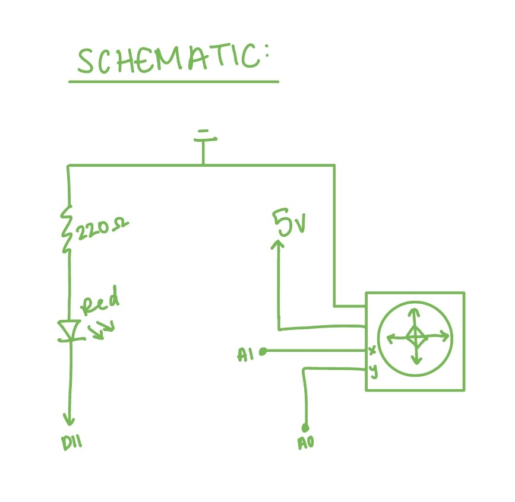
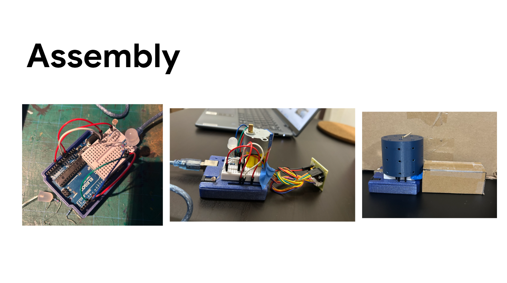

Calculations:

I used the equation V=IR rearranged to R=V/I to find the resistor needed
for the red LED. Voltage input is 5V from the source, and the voltage drop
is 2V for the red led, leaving us with 3V over 20mA. I got 150 ohms from my
calculations, but was told to round to 220 ohms in class for safety. The
joystick does not need a resistor.
Bill Of Materials:

Schematic:

I created these schematics using icons learned in class. The power source
is 5V for the multicolored led, the photoresistor, and the stepper motor.
The resistor for the LED should be 220 ohms for the red and green, and 100
ohms for the blue based on my calculations and rounding. The photoresistor
uses a 10k ohm resistor.

These are the individual parts of the prototype and how they were constructed.
I found the arduino case on an open CAD forum and printed it using a 3D printer,
I made the cable cover out of cut up cardboard and tape, and I CAD modelled the
lampshade in fusion 360 and printed it using a 3D printer.

These images are when I began putting the components together with the constructed
parts. The first image shows the circuit with a multicolor LED that fades between
colors creating a rainbow cascading affect. The second picture shows when I added
the stepper motor to function with the fade sequence. The stepper motor was too short
to move the lamp shade over the LED and the wiring, so I ended up gluing some paper
straw sections to the bottom of the stepper motor to elevate it above the LED and
wires. The final image is my final prototype, combining a working circuit with
constructed parts to make a functioning prototype.
Arduino Code Snippet:
#include < Stepper.h> //import the stepper motor library
//create an integer that allows the stepper motor to turn 360 degrees
const int stepsPerRevolution = 2048;
//set up a stepper motor that turns 360 degrees with the integer we made above, and is plugged into
//pins 6, 5, 4, and 3.
Stepper myStepper(stepsPerRevolution, 6, 5, 4, 3);
int ledR = 9; //red LED in PWM pin 9
int ledG = 10; //green LED in PWM pin 10
int ledB = 11; //blue LED in PWM pin 11
const int analogInPin = A0; //red LED in analog pin A0
//variables for non-blocking timing
unsigned long lastUpdate = 0; //variable for storing time (32-bit positive numbers)
int fadeValue = 0; //variable for how much to fade led by
int phase = 0; //0: G->R, 1: R->B, 2: B->G
//setup
void setup() {
pinMode(ledR, OUTPUT); //initialize red LED as an output
pinMode(ledG, OUTPUT); //initialize green LED as an output
pinMode(ledB, OUTPUT); //initialize blue LED as an output
myStepper.setSpeed(5); //start speed slightly increased so you can see it move
}
//loop
void loop() {
//assign the reading from the photosensor to sensorValue
int sensorValue = analogRead(analogInPin);
//if the sensor value is equal to or greater than the brightness threshold
if (sensorValue >= 920) {
//move the motor a tiny bit every single loop
myStepper.step(1);
//update LEDs every 30ms without stopping the motor
if (millis() - lastUpdate >= 30) { //if the current time minus the lastUpdate vale > or = 30...
lastUpdate = millis(); //update lastUpdate int to current time in milliseconds
updateLEDs(); //run the updateLED function
}
} else { // otherwise...
//turn off LEDs if sensor is above threshold
analogWrite(ledR, 0); //turn red LED to 0 power
analogWrite(ledG, 0); //turn green LED to 0 power
analogWrite(ledB, 0); //turn blue LED to 0 power
}
}
// updateLEDs function
void updateLEDs() {
fadeValue += 5; //increase fadeValue by 5
if (fadeValue > 255) { //if the fadeValue gets over the highest output value for the LEDs
fadeValue = 0; //reset the fade value to 0
phase = (phase + 1) % 3; //move to next color phase
}
//green to red
if (phase == 0) {
analogWrite(ledR, fadeValue); //set the red LED to fadeValue brightness (fade up)
analogWrite(ledG, 255 - fadeValue); //set the green LED to highest minus fadeValue (fade down)
analogWrite(ledB, 0); //set blue LED to off
}
//red to blue
else if (phase == 1) {
analogWrite(ledR, 255 - fadeValue); //set the red LED to highest minus fadeValue (fade down)
analogWrite(ledG, 0); //set green LED to off
analogWrite(ledB, fadeValue); //set the blue LED to fadeValue brightness (fade up)
}
//blue to green
else {
analogWrite(ledR, 0); //set red LED to off
analogWrite(ledG, fadeValue); //set the green LED to fadeValue brightness (fade up)
analogWrite(ledB, 255 - fadeValue); //set the blue LED to highest minus fadeValue (fade down)
}
}
Techical Write Up:
The concept for this project came from the wishing machine in the Greatest Showman because I recently
watched this movie when we started brainstorming ideas for final projects. I wanted to take the idea of
a spinning lamp that projected stars on the walls, and make it fully automated with more color options.
A multicolor LED and stepper motor seemed like an obvious choice of components for this project, and a
photoresistor made the turning on and off of the machine automatic. I began by creating a list of materials
I thought I would need to make my final project. I then built a simple fading circuit that faded in between
colors, creating a rainbow cascade affect on the led. I then made the LED turn on and off with a photoreistor.
After I made my fading LED, I added a stepper motor to the circuit that spun slowly when the photoresistor
read light and turned off when the photoreistor read dark. once I built my working circuit, I prototyped
an arduino case and lampshade with PLA and a 3D printer. I also prototyped a cords cover out of cardboard
to hide the cords coming out of the stepper motor cords and the stepper motor driver. After putting the
prototyped pieces on my circuit, I tested the functionality inside a box that set the scale of the lamp
and filmed my demo.
The hardest part of the project was the timing blocks of combining a fade sequence and a photoresistor.
When I had my fade function and analogRead(photoresistor) in the loop function, there was a delay in
response from my device when I turned on the lights because the fade function would run for a few seconds.
Then once the fade sequence ran the photosensor would read again. After researching why this issue was
occurring, I found out that I had to create a separate variable to read the time, which would allow the
photoresistor to run every millisecond and run the fade sequence separately according to the new time
variable.
If I could do this project over again, I think I would save more time for iteration, especially in the
CAD modeling and prototyping section. Also, since my device is not to scale, I would most likely need a
larger multicolored LED, longer base to hold my stepper motor, and more developed CAD models to hide the
circuitry.